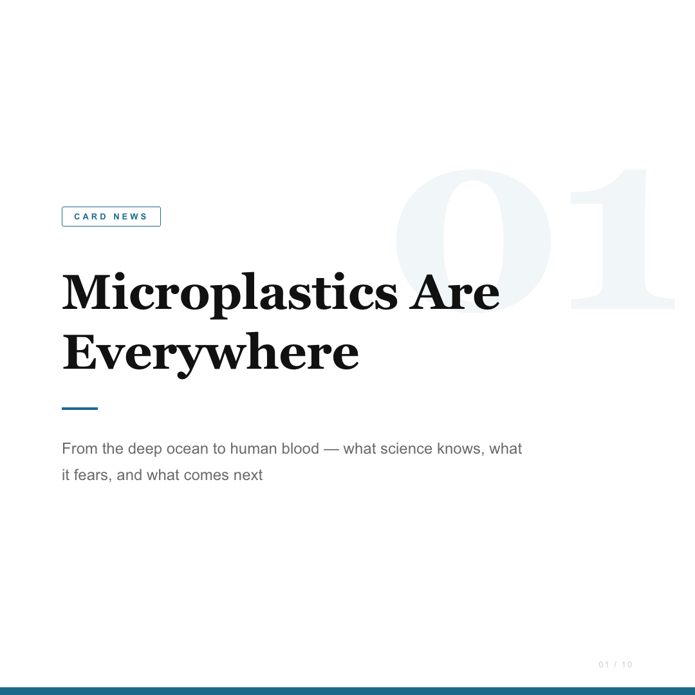
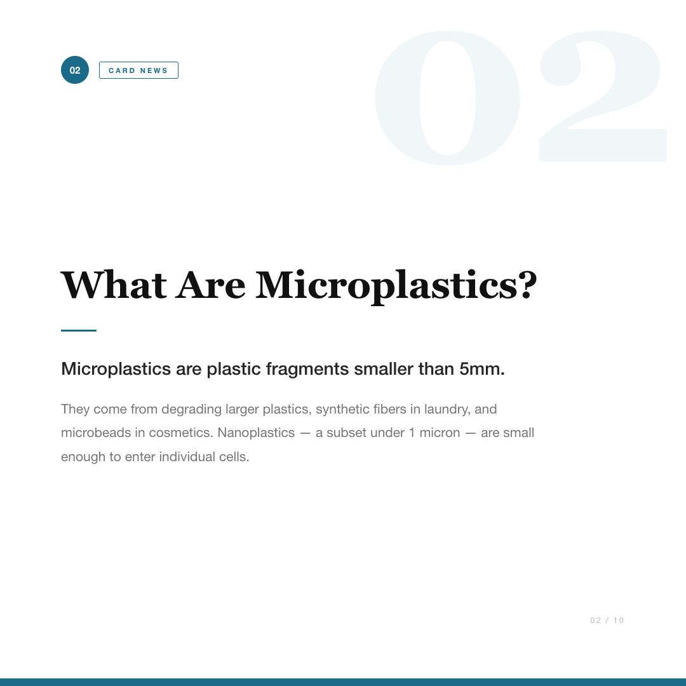
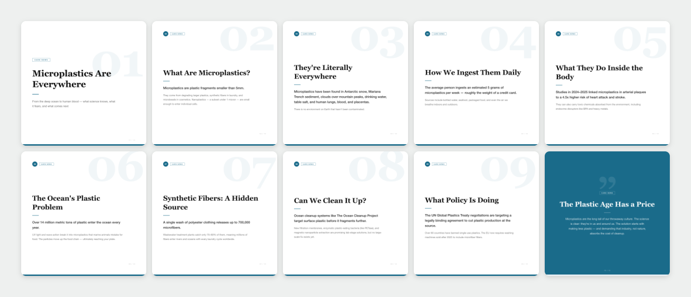

Case study · Generative content workflow
A Claude-powered CLI tool that turns a single topic into a schema-validated 10-slide visual briefing — Claude drafts the slide content as JSON, a bounded correction retry catches malformed output, and a deterministic Puppeteer rendering pipeline turns it into a reviewable 1080×1080 PNG deck plus a thumbnail grid.
Turning a topic into a visual briefing normally means doing every step by hand: framing the topic, structuring it into a sequence of slides, drafting copy for each one, formatting it consistently, rendering it to an image, and reviewing the result — one slide at a time, ten times over.
Designed for a user who needs to turn a topic into a consistent visual briefing without manually drafting, structuring, formatting, and rendering every slide from scratch. No real marketing or communications team has adopted this — it's a working demonstration of the pipeline, run 36 times on real topics during development.
No measured time savings are claimed here. Qualitatively: a user would research the topic, draft ten slides' worth of copy, decide on sequencing and emphasis, format each slide by hand or in a design tool, export each one, and assemble a set for review — all as separate manual steps.
scripts/index.js) supporting generate+render (default), generate-only, and a --render command that re-renders an existing valid JSON file without calling Claude again.scripts/generator.js, model claude-sonnet-4-6) that produces a 10-slide JSON structure, plus optional audience/tone/language/key-point controls.scripts/schema.js) — exact slide count, slide types by position, required fields, length limits — and one bounded correction retry when the response is schema-invalid, with the validation errors fed back as a targeted correction prompt.scripts/renderer.js) that stages a render in a temporary directory, validates it completely, and only then swaps it into the real output directory — so a failed or partial render can never corrupt a prior successful one. This also fixed a real bug: Puppeteer's browser previously wasn't closed on a mid-render error, leaking a headless process.run-metadata.json) and a human-review checklist printed after every successful run.output/microplastics-everywhere-what-we-know/); 35 other example decks generated during development were pruned from the tracked tree to keep the repository focused.Free-text CLI argument, e.g. a one-line subject.
Drafts a 10-slide JSON structure in one call.
Each slide rendered to a 1080×1080 PNG.
PNG deck + thumbnail grid reviewed before any use.
Exactly one step in the whole pipeline touches a language model per run — drafting the JSON. Every step after that (validating its shape, choosing which of the 3 templates to render, producing the PNGs, assembling the grid) is plain deterministic code, which is why --render can redo all of it from a saved JSON file with no API call and no cost.
CLI command:
npm install
export ANTHROPIC_API_KEY=...
npm start -- "Microplastics are everywhere"Real generated output (output/microplastics-everywhere-what-we-know/cards.json, first two of ten slides):
{
"title": "Microplastics Are Everywhere",
"theme_color": "#1A6B8A",
"slides": [
{
"slide_number": 1,
"type": "title",
"heading": "Microplastics Are Everywhere",
"body": "From the deep ocean to human blood — what science
knows, what it fears, and what comes next"
},
{
"slide_number": 2,
"type": "content",
"heading": "What Are Microplastics?",
"body": "Microplastics are plastic fragments smaller than 5mm.
They come from degrading larger plastics, synthetic
fibers in laundry, and microbeads in cosmetics."
}
// ... 8 more slides
]
}The corresponding rendered slides:



diary-shot.png) — this is the fast-review artifact a user would look at first.scripts/schema.js) rejects: wrong slide count, an unsupported or out-of-position slide type, missing/empty heading or body, headings over 200 characters, bodies over 800 characters, an invalid theme_color, and any unexpected field.--render) without a Claude call, and so a rendering failure never loses the generated content.CLAUDE.md previously described the slide templates as having a "gradient background, centered white text" — stale language predating an earlier redesign. The templates actually in templates/styles.css, and the slides rendered above, use a solid white background with near-black heading text (title/content slides) and a solid theme-color background (closing slide only). Both the README and this page now describe what's actually rendered.Quick start:
npm install
export ANTHROPIC_API_KEY=...
npm test # 33 tests, no API key needed
npm start -- "<topic>"
npm start -- --render output/microplastics-everywhere-what-we-know/cards.jsonEach run writes output/<topic-slug>/ containing cards.json, slide-01.png through slide-10.png, diary-shot.png, and run-metadata.json — shown above for one real example. The --render command re-renders an existing valid JSON file at no API cost.
Quoted directly from the project's own README:
--render has no API cost); no hosted demo exists.